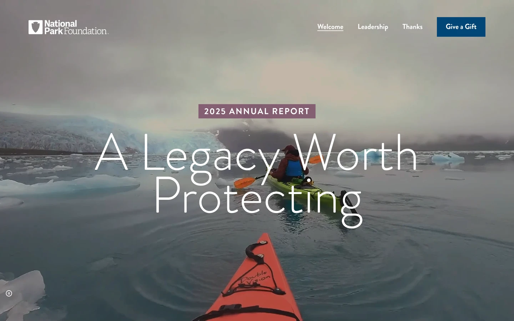

National Park Foundation
The 2025 Annual Report for the National Park Foundation, the official charity of America’s national parks. Under the theme A Legacy Worth Protecting, it tells a year of work across more than 430 national park units, with funding that reached more than 285 parks and partners.
